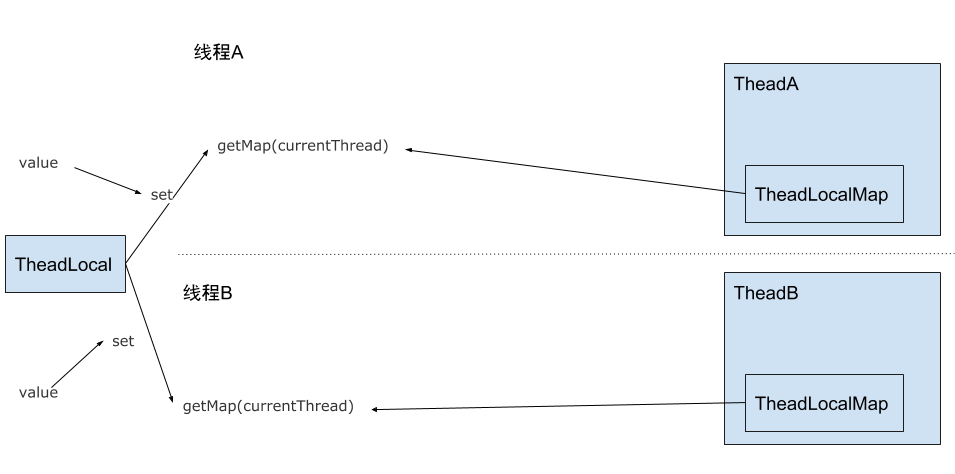

ThreadLocal是什么
ThreadLocal是java中处理并发问题的一种方式，但是和Synchronized、volatile等进程同步关键字不同，ThreadLocal主要用于进程隔离，即每一个线程都有一个自己的ThreadLocal，访问时访问的都是线程持有的对象，无法访问其他线程的ThreadLocal,也就不存在并发的问题。
ThreadLocal使用
ThreadLocal使用起来类似一个数据封装类，使用set和get方法设置和获取存储的内容
//创建ThreadLocal对象，使用泛型制定类型 |
ThreadLocal特殊的地方就在于不同线程间是无法获取到其它线程的相应对象的，在多线程场景中对ThreadLocal的使用实例如下
ThreadLocal<Integer> localInt = new ThreadLocal<>(); |
ThreadA和ThreadB中ThreadLocal是不会相互影响的，他们每次从ThreadLocal中获取的都是线程内部的相应数据。
在上面的例子中我们只是用ThreadLocal存储了一个变量，如果想要同时拥有多个线程私有的变量就只能创建多个TreadLocal对象。
ThreadLocal实现原理
ThreadLocal看上去很神奇，原理其实并不难，它只是把我们的变量关联到了线程的Thread对象上，我们借助ThreadLocal的set方法来说明这点。
public void set(T value) { |
在我们通过set方法设置ThreadLocal的内容是，它首先获取当前的Thread对象，同时获取Thread上的ThreadLocalMap，ThreadLocalMap事实上是hash表的一种实现，set事实上是把ThreadLocal对象和相应的value分别作为key和value保证在了这个map中，也就是说我们的value保存在Thread对象内。

get方法也是类似的，我们使用get方法获取值的时候，首先是获取currentThread，然后通过Thread的ThreadLocalMap用ThreadLocal作为key获取对应的value。
public T get() { |
如果没有创建过ThreadLocalMap，setInitialValue会创建ThreadLocalMap同时返回null。
ThreadLocal内存泄漏
正常来说ThreadLocal的对象和其保存的value持有在一个普通的对象内，而在保存时他们会作为key和value保存在Thread对象的map内，线程一般拥有比普通对象更长的生命周期，特别是对于线程池中的线程。
这种情况下作为key的ThreadLocal和value就有泄漏的风险，ThreadLocal的设计上自然也考虑到了这点，因此ThreadLocalMap中Key都是作为弱引用存在的
static class Entry extends WeakReference<ThreadLocal<?>> { |
这样当持有ThreadLocal的对象销毁后，没有强引用的ThreadLocal也会很快被回收，但是与之对应的value却没法被自动回收。
事实上ThreadLocalMap对于这样的情况也是有所处理，即ThreadLocalMap在每次set或者get时发现有key为空的元素，都会把它清理掉
private void set(ThreadLocal<?> key, Object value) { |
但是即使这样光靠ThreadLocalMap也没有办法完全避免value的内存泄漏，最好的就是每次使用完ThreadLocal后都调用它的remove方法，清除数据。